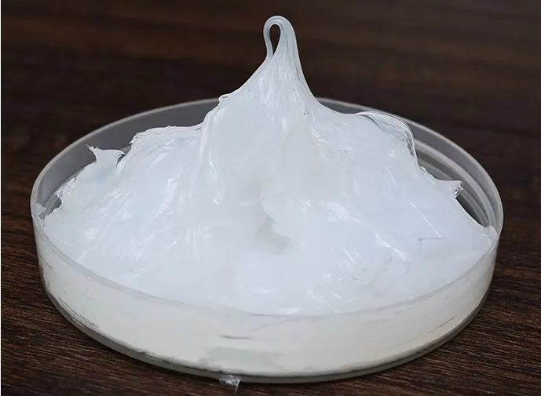
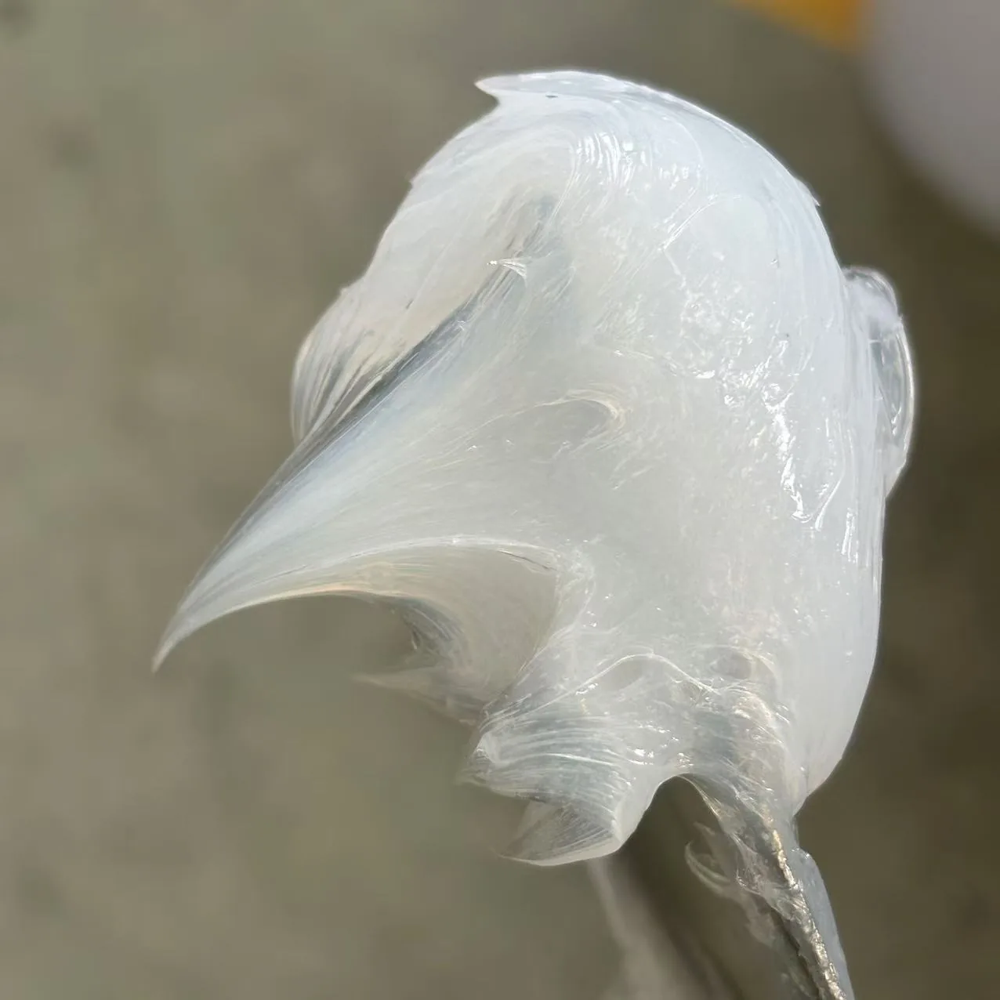
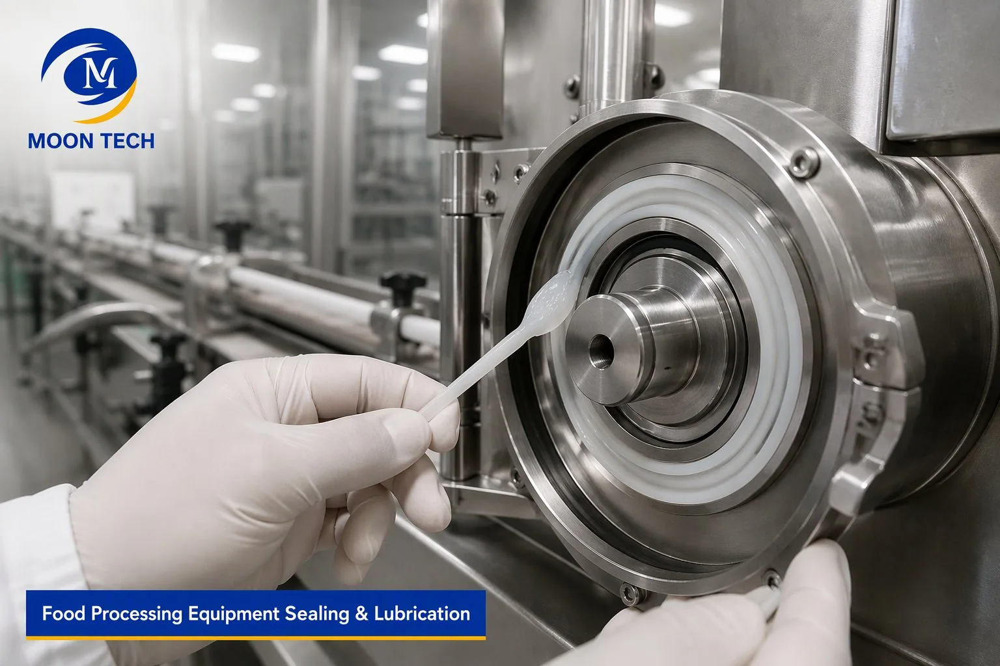
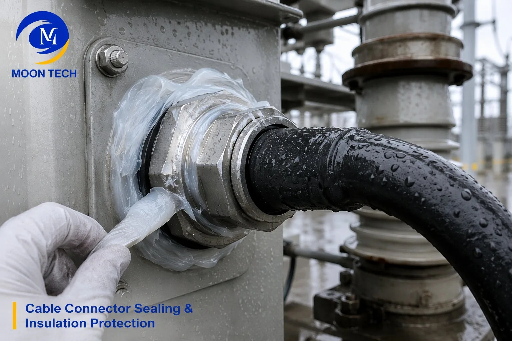

Dielectric Insulating & Waterproof Sealing Paste for Electrical, Vacuum & Food Machinery
NLGI 2 / Dielectric / Self-ExtinguishingTranslucent silicone paste refined from synthetic oil with an inorganic thickener, plus structure modifiers and additives. Excellent heat and cold resistance with minimal consistency change across temperatures, outstanding waterproof sealing that resists wash-off under humid conditions, and strong adhesion with anti-rust and anti-wear performance. Physiologically inert and non-toxic, with good compatibility across a wide range of plastics and metals. Tested in full to HG/T 2502-1993; every batch ships with COA.
| Product Type | Silicone paste grease — synthetic oil thickened with inorganic thickener |
|---|---|
| Executed Standard | HG/T 2502-1993 (every batch tested, COA provided) |
| Appearance | Milky-white translucent grease, free from mechanical impurities |
| Cone Penetration | Unworked 220 (spec 200–250 ×0.1 mm); worked 243 (spec ≤290) |
| Oil Bleed | ≤7.0% — tested 0.81% |
| Volatile Content | ≤2.0% — tested 1.43% (keeps the grease from drying out) |
| Relative Dielectric Constant (50 Hz) | 2.6–3.0 — tested 2.8 |
| Dielectric Dissipation Factor (50 Hz) | ≤8.0 × 10-4 — tested 3.3 × 10-4 |
| Volume Resistivity | ≥1.0 × 1015 Ω·cm — tested 2.5 × 1015 |
| Dielectric Strength | ≥18 MV/m — tested 20 MV/m |
| Flammability / Corrosiveness | Self-extinguishing; no corrosion spots on metal |
| Vacuum Sealing | Maintains vacuum up to 1.33 × 10-4 Pa long-term |
| Packaging | 1 kg / 5 kg / 18 kg plastic pails; 4 pails per carton (20 kg) |
| Shelf Life | 24 months stored sealed at ambient temperature |
Sealing and lubrication of food processing equipment — shaft and bearing points on filling lines
Cable connector sealing and insulation protection in outdoor electrical equipment
Milky-white translucent paste — free of mechanical impurities, tested per HG/T 2502-1993
Smooth, adhesive texture — easy to brush, scrape or inject with a grease gun
Silicone Grease 5201-2 — texture, adhesion and application demonstration
Insulation protection and moisture sealing for cable connectors and battery terminals, indoors or outdoors. Waterproof sealing performance verified by cobalt chloride test.
Sealing and lubrication of moving parts on filling, packaging and processing lines. Physiologically inert and non-toxic, with excellent wash-off resistance under repeated wet cleaning.
Filling and protection of semiconductors and transistors, where stable dielectric constants and low dissipation factor matter.
Anti-pollution flashover protection and surface insulation of high-voltage insulators and instrument surfaces in humid, contaminated environments.
Optical fiber core filling and optical cable sealing, with stable consistency across service temperatures.
Sealing of high-vacuum equipment — maintains a vacuum up to 1.33 × 10-4 Pa with long-term stability. Also for metal-to-plastic and metal-to-rubber moving parts in humid conditions.
Other grades customers also source from us.